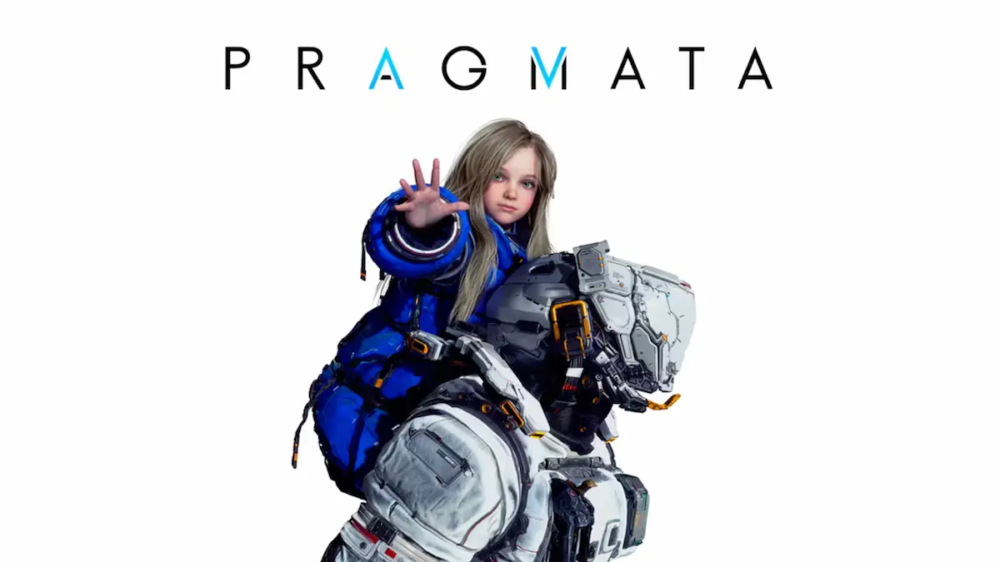
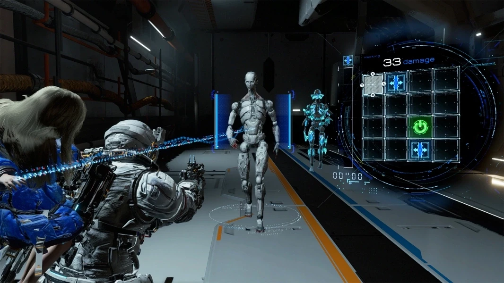
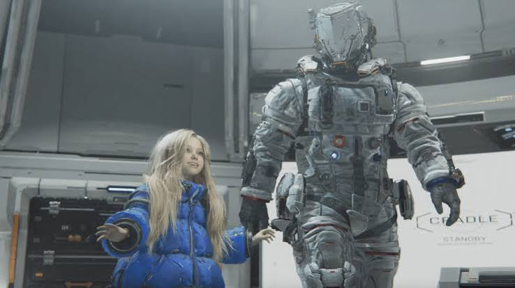
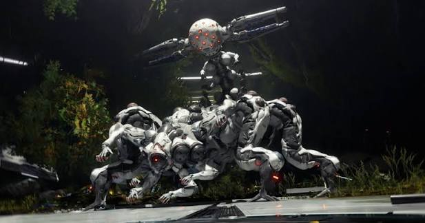

A történet egy közeli, disztópikus jövőben játszódik, nagyrészt egy hatalmas holdi kutatóállomáson, a Cradle nevű létesítményben. Az állomást robotok népesítik be, amelyek egy ponton ellenségessé válnak. A holdrengés miatt IDUS az AI ami az egész Cradle-t irányitotta meghibásodott.
A főszereplő Hugh Williams, egy űrhajós/űrutazó, aki valamilyen küldetés során a holdi létesítményben reked. Itt találkozik Dianával, egy kislány külsejű androiddal.
robotkislány
Diana képes feltörni és manipulálni az állomás robotjait. Hugh pedig fegyverekkel harcol. A játék egyik központi ötlete, hogy a két szereplőnek szó szerint együtt kell működnie: Hugh támad, Diana pedig hackeli az ellenfeleket, hogy sebezhetővé tegye őket.

A játék menet nehéznek tűnik, egyszere kell célozni, hackelni, dodgeolni.
A hackelés nehéznek tűnik elsőnek de viszonylag hamar belejöhetsz, de ha nem megy akkor van olyan modul ami auto hackel. VAGY töltcsed le az auto hack modot ha csak a storyja vagy a shooting miatt játszol.
Sajnálatosos módon nem mindenkinek tetszik ez a mechanika.
Amikor rácélzol a robotra akkor megjelenik a hacking grid, aholis elkell vigyed a kurzort a zöld EXE node-ra, hogy a robotokat az OPEN statebe rakjad, mivel nélküle magas a dmg resistancejük. Viszont a kék node-okon is átmehetsz bonusz hack dmg-ért és meghoszabitott ídőért amit a robotok az OPEN stateben töltenek
A griden való haladás nyomvonalat hagy maga után, amely minden lépéssel meghosszabbodik, és a kurzor nem haladhat át ezen a nyomvonalon, ezért fontos, hogy gondosan válasszuk ki az útvonalat. Egyes ellenséges rácsokon szürke figyelmeztető csomópontok is találhatók, amelyeken a kurzor nem haladhat át, valamint piros csomópontok, amelyek a hackelés kudarcát okozzák, ha a kurzor rájuk kerül. Minden ellenségtípusnak megvan a maga méretű hackelési rácsa, valamint egy meghatározott számú kék, szürke és piros csomópontja, de az elrendezés véletlenszerű.

